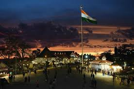
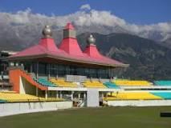

Himachal Pradesh is a northern Indian state in the Himalayas. It's home to scenic mountain towns and resorts such as Dalhousie. Host to the Dalai Lama, Himachal Pradesh has a strong Tibetan presence. This is reflected in its Buddhist temples and monasteries, as well as its vibrant Tibetan New Year celebrations. The region is also well known for its trekking, climbing and skiing areas.The predominantly mountainous region comprising the present day Himachal Pradesh has been inhabited since pre-historic times having witnessed multiple waves of human migration from other areas.[10] Through its history, the region was mostly ruled by local kingdoms some of which accepted suzerainty of larger empires. Prior to India's independence from the British, Himachal comprised the hilly regions of Punjab Province of British India. After independence, many of the hilly territories were organised as the Chief Commissioner's province of Himachal Pradesh which later became a union territory. In 1966, hilly areas of neighbouring Punjab state were merged into Himachal and it was ultimately granted full statehood in 1971.
|  |
| Shimla is the capital of the northern Indian state of Himachal Pradesh, in the Himalayan foothills. Once the summer capital of British India, it remains the terminus of the narrow-gauge Kalka-Shimla Railway, completed in 1903. It’s also known for the handicraft shops that line The Mall, a pedestrian avenue, as well as the Lakkar Bazaar, a market specializing in wooden toys and crafts. Small hamlets were recorded prior to 1815 when British forces took control of the area. The climatic conditions attracted the British to establish the city in the dense forests of Himalayas. As the summer capital, Shimla hosted many important political meetings including the Simla Accord of 1914 and the Simla Conference of 1945. After independence, the state of Himachal Pradesh came into being in 1948 as a result of integration of 28 princely states. Even after independence, the city remained an important political centre, hosting the Simla Agreement of 1972. After reorganisation of state of Himachal Pradesh, the existing Mahasu district was named Shimla. |
Dharamshala |
|  |
| Dharamshala is a city in the Indian state of Himachal Pradesh. Surrounded by cedar forests on the edge of the Himalayas, this hillside city is home to the Dalai Lama and the Tibetan government-in-exile. The Thekchen Chöling Temple Complex is a spiritual center for Tibetan Buddhism, while the Library of Tibetan Works and Archives houses thousands of precious manuscripts. |
| Back |